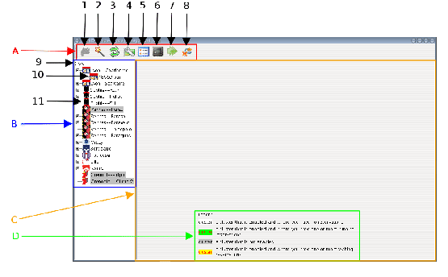

GRUDU is composed of one principal frame shown in Figure 3.1.
From this frame the user will be able to:
- Log in GRID'5000
- Monitor GRID'5000 and his/her reservations
- Have a terminal on the different sites/clusters/main nodes of his/her
reservations on GRID'5000
- deploy images through Kadeploy on the appropriate nodes
- Log out
Figure 3.1:
Main interface of GRUDU
|
 |
Legend of Figure 3.1:
- A
- Options toolbar.
- 1
- Button used to log in GRID'5000.
- 2
- Button used to display the reservation frame.
- 3
- Button used to update the GRID'5000 tree of sites, clusters and jobs.
- 4
- Button used to display the configuration frame.
- 5
- Button used to display a summary of the information about GRID'5000 and
your reservations.
- 6
- Button used to display a terminal on the preferred access point you
have defined.
- 7
- Button used to display the Kadeploy frame for the deployment if
images with user-defined environments.
- 8
- Button used to log out of GRID'5000.
- B
- GRID'5000 sites, clusters and jobs.
- 9
- Root node of the GRID'5000 sites, clusters and jobs tree. this node
allows you to display information about the grid. When right-clicking on this
node, you can either update the GRID'5000 view or delete or your reservation on GRID'5000
- 10
- Node corresponding to a job. Information on the job are displayed
in the information panel. When right-clicking on that node, you will able to
delete the corresponding reservation, update the cluster view or open a shell on
the main node of the corresponding job.
- 11
- Node corresponding to a cluster. Information about the cluster,
i.e. the occupation of the nodes and the existing reservations on this
cluster. When right-clicking on a cluster node, you can either delete the
reservations you have on the cluster or open a shell on the cluster frontal.
- C
- Main panel where information are displayed. Information about GRID'5000,
the different clusters and the jobs are displayed here.
- D
- Legend of the colors used for the sites, clusters and jobs.
David Loureiro
2007-07-04